The Pressure Machine
Three machines, not a hundred drugs. A pump with pipes, the wiring that times it, and the fuel line that clogs it. Every drug on this list turns one dial on one of them.
Three machines, and four dials on the first one
Cardiovascular pharmacology looks like the longest drug list of the year. It is really three machines. The pump and its pipes sets blood pressure and oxygen demand — preload, afterload, contractility, heart rate, and the neurohormonal system (renin–angiotensin–aldosterone, sympathetic tone, natriuretic peptides) that keeps turning those dials. The wiring is the cardiac action potential: sodium, calcium, potassium, and the AV node. The fuel line is cholesterol and triglyceride traffic between gut, liver, and blood. Every drug reaches into one of them — and the exam question is almost always "which gear, and what breaks when you touch it."
What you're responsible for
Same contract as every OMK drug list — exams draw on it for:
- Mechanisms of action
- Drugs of choice for common/important conditions
- MAJOR side effects (common and critical)
- MAJOR drug–drug interactions
- Toxicities and their reversal agents
- ECG effects — this list is unusual in spelling them out for each class
Only generic names are tested (amlodipine, sacubitril/valsartan). Trade names sit in parentheses because that is what you will hear on the wards. Antiplatelets, anticoagulants, and thrombolytics are covered in the Heme list — this document carries only the one-table antiplatelet review the CV list includes.
Built-in study tools
- 🫣 Recall Mode (R) — blurs every testable fact; tap to self-check.
- Quiz-me tables — every comparison table can hide its cells; tap a cell to reveal.
- Games — fifteen drills woven through the sections, from Machine Detective and the Demand Dial to the timed Speed Round in the Arcade at the end.
- Confidence dots — rate each section; your "shaky" list lives in the ☰ tools menu.
- 📄 HY Summary (S) — the whole block on one printable page.
- Figures — lazy-loaded from the Week 13 notes; tap any to enlarge.
- T toggles dark mode; Esc closes any window.
Reading the patient before you pick the dial know cold
Abbreviations used below — HFrEF heart failure with reduced ejection fraction; LVEF left ventricular ejection fraction; MI myocardial infarction; AV atrioventricular; WPW Wolff–Parkinson–White (an accessory conduction pathway).
- Hypertension, no comorbidity → thiazide-type diuretic (chlorthalidone beats hydrochlorothiazide 1.5–2×), ACE inhibitor/ARB, or a dihydropyridine calcium blocker.
- Hypertension + diabetes → ACE inhibitor is the drug of choice (renal protection, even when normotensive with microalbuminuria).
- Chronic HFrEF → the four pillars: ACE inhibitor/ARB/ARNI · evidence-based β-blocker (carvedilol, metoprolol) · mineralocorticoid receptor antagonist · SGLT2 inhibitor; loop diuretic for congestion, digoxin for symptoms.
- Acute decompensated heart failure → loop diuretic ± nitrate/nitroprusside; dobutamine or milrinone if refractory; β-blocker is avoided until euvolemic.
- Rapid atrial fibrillation with a normal-looking QRS → IV diltiazem (or IV esmolol). With WPW / a wide pre-excited QRS → no AV nodal blockers — procainamide or cardioversion.
- Angina → short-acting nitroglycerin to abort; β-blocker or long-acting nitrate/calcium blocker to prevent; ranolazine when those fail.
The Three Machines
Pick a drug and watch what it touches. Machine 1 — the Pump & Pipes: the heart's β1/cAMP engine, the arterioles that set afterload, the veins that set preload, the nephron that sets volume, and the renin–angiotensin–aldosterone chain that keeps all of them turned up. Machine 2 — the Wiring: the ventricular action potential phase by phase, the AV node, and the three ECG intervals each class stretches. Machine 3 — the Fuel Line: cholesterol from gut to liver to blood and back, and the triglyceride traffic beside it.
Abbreviations on this map — SVR systemic vascular resistance; CO cardiac output; cAMP / cGMP cyclic adenosine / guanosine monophosphate (the "go" signal inside heart cells and the "relax" signal inside vessel muscle); PDE phosphodiesterase (the enzyme that destroys them); sGC soluble guanylyl cyclase (makes cGMP when nitric oxide arrives); NKCC2 Na⁺-K⁺-2Cl⁻ cotransporter (loop of Henle); NCC Na⁺-Cl⁻ cotransporter (early distal tubule); ENaC epithelial sodium channel (collecting duct); MR mineralocorticoid (aldosterone) receptor; SGLT2 sodium-glucose cotransporter 2; JG juxtaglomerular (the renin cells); ACE angiotensin-converting enzyme; AT1 angiotensin II type 1 receptor; ANP/BNP atrial / B-type natriuretic peptide; TTR transthyretin; NPC1L1 Niemann–Pick C1-like 1 (the gut cholesterol transporter); HMG-CoA 3-hydroxy-3-methylglutaryl coenzyme A; ACLY ATP-citrate lyase; PCSK9 proprotein convertase subtilisin/kexin type 9; LPL lipoprotein lipase; HSL hormone-sensitive lipase; FFA free fatty acids.
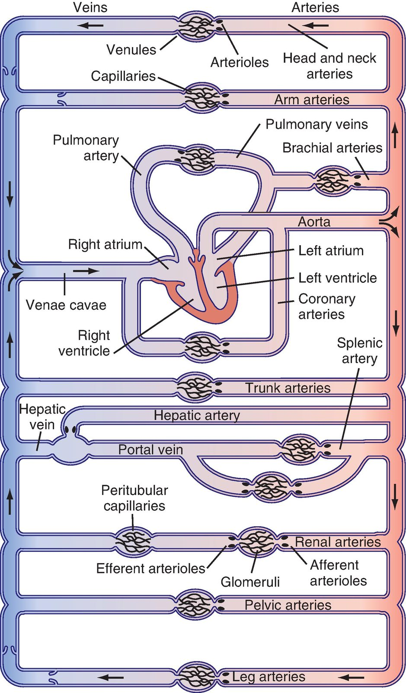
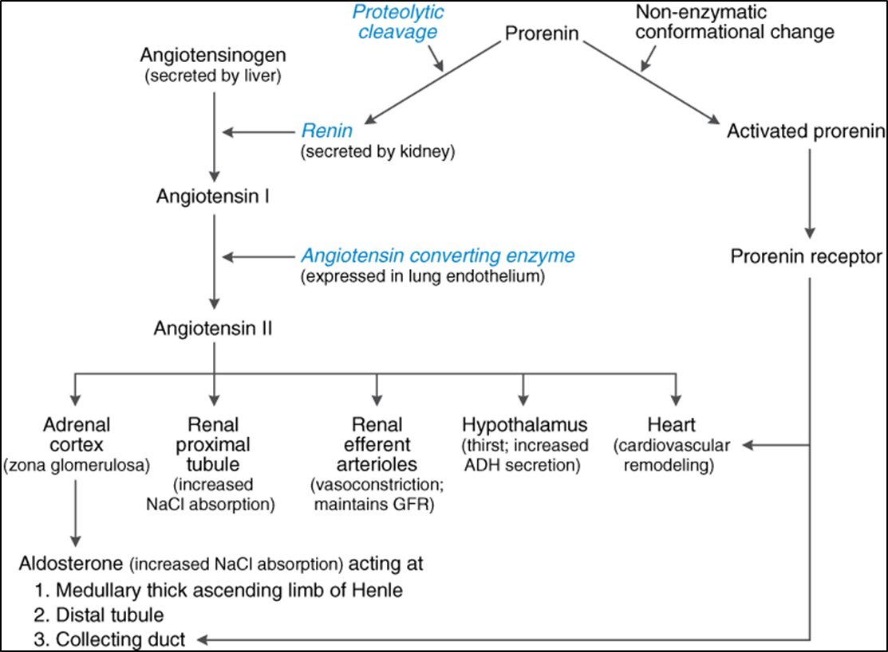
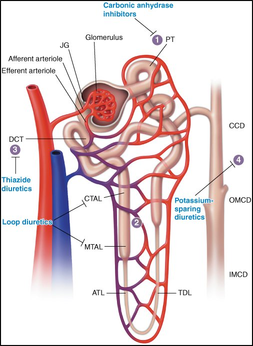
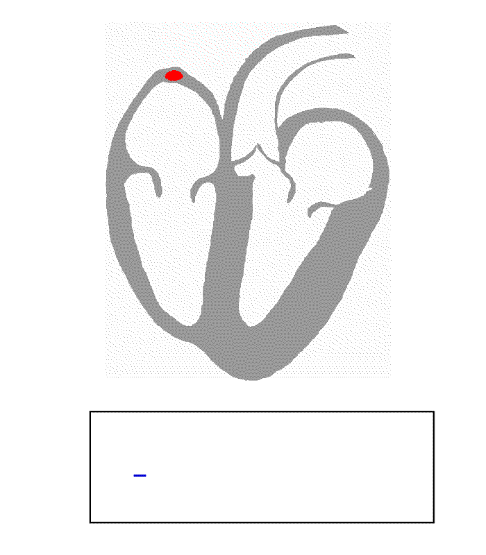
The machine lights up every gear that drug touches — and strikes through whatever it blocks.
🎮 Machine Detective
0 / 0The machine above lights up a mystery mechanism — no name, no caption. Read what is lit, what is struck, and what is moving, then name the drug. This is the map in reverse: recognition instead of browsing.
Antianginal Drugs
Angina is arithmetic: the myocardium is asking for more oxygen than a narrowed coronary can deliver. Three of the four classes on this list work by lowering demand — nitrates unload the preload, dihydropyridines unload the afterload, β-blockers turn down rate and contractility. The fourth, ranolazine, lowers demand at the level of the sodium channel without touching blood pressure or pulse. Know which dial each one turns and its side effects become predictable.
Abbreviations in this section — NTG nitroglycerin; ISDN / ISMN isosorbide dinitrate / mononitrate; SL sublingual; IV intravenous; NO nitric oxide; cGMP cyclic guanosine monophosphate; PDE5 phosphodiesterase type 5 (the enzyme sildenafil blocks); PVR peripheral vascular resistance; CCB calcium channel blocker; DHP dihydropyridine; AV atrioventricular; HF heart failure; MI myocardial infarction; BBB blood–brain barrier; CYP3A cytochrome P450 3A (the liver's busiest drug-metabolizing enzyme).
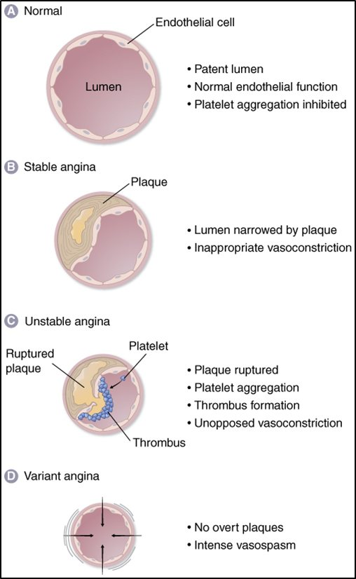
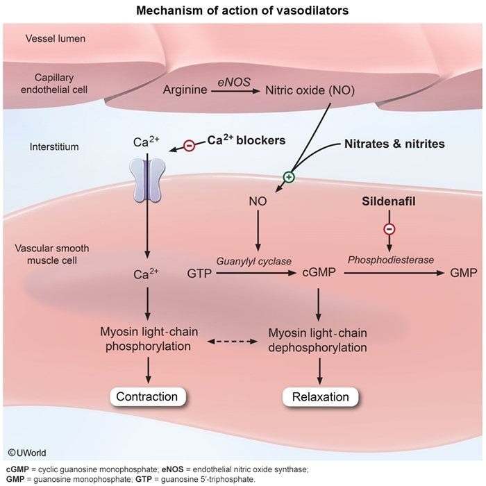

Organic nitrates — nitroglycerin, isosorbide dinitrate, isosorbide mononitrate
- Indications
- Abort or prevent angina pectoris; improve exercise capacity; abort or prevent coronary spasm.
- Mechanism
- Release nitric oxide → stimulates guanylate cyclase → cGMP → myosin light chain kinase is switched off → smooth muscle relaxes. The venodilation is the major effect: blood pools in the veins, less returns to the heart, preload falls, wall stress falls, and myocardial oxygen demand drops. At higher doses they are mild arteriolar dilators too, and they relieve coronary spasm directly.
- Side effects
- Headache (meningeal vessels dilate) and hypotension; the reflex tachycardia that follows is standard pharmacology and one reason nitrates pair well with a β-blocker.
- Tolerance
- Long-acting preparations lose effect within a day of continuous exposure. Prevent it with a 10–12 hour nitrate-free interval — patch off overnight, mononitrate once in the morning.
- Caution know cold
- Avoid sildenafil (Viagra) and related PDE5 inhibitors — the combination can cause severe hypotension.
| Preparation | Onset / duration | What it is for |
|---|---|---|
| Nitroglycerin sublingual tablet or mucosal spray | Short-acting — minutes | Abort an anginal attack as it happens; can also be taken before an activity that reliably triggers one. |
| Isosorbide dinitrate / mononitrate; NTG slow-release capsule, patch, or ointment | Long-acting — hours | Raise the anginal threshold and improve exercise tolerance. The tolerance problem lives here — build in the 10–12 hour nitrate-free window. |
| Intravenous nitroglycerin | Titratable infusion | Unstable angina and myocardial infarction — and acute heart failure (see the heart failure section). |
Calcium channel blockers — dihydropyridines (amlodipine, nifedipine), diltiazem, verapamil
- Indications
- Improve exercise capacity in patients with angina; prevent angina; hypertension and supraventricular arrhythmias (see those sections).
- Mechanism
- Block L-type calcium channels in vascular smooth muscle (coronary and peripheral arterioles) and/or cardiac muscle. All of them relieve coronary spasm.
- Side effects
- Fatigue, headache, edema, constipation (verapamil); sinus and AV node dysfunction with verapamil and diltiazem.
- Interactions know cold
- Verapamil increases digoxin levels. Avoid verapamil or diltiazem plus a β-blocker — the combination may precipitate heart block and bradycardia (and heart failure).
- ECG
- Verapamil and diltiazem commonly cause sinus bradycardia; they may lengthen the PR interval → 1st, 2nd, or 3rd-degree heart block in patients with underlying conduction disease.
- Formulation rule
- It is essential to use long half-life agents (amlodipine) or slow-release preparations. Short-acting nifedipine drops the pressure abruptly and triggers reflex tachycardia — standard teaching, and the reason it fell out of favor.
| Drug | Main target | Hemodynamic effect | Signature harm |
|---|---|---|---|
| Dihydropyridines — amlodipine, nifedipine | Arterioles | ↓ peripheral vascular resistance → ↓ afterload → ↓ O₂ demand; ↑ coronary flow. Little direct cardiac effect. | Ankle edema, headache, flushing; reflex tachycardia with short-acting forms. |
| Verapamil | Cardiac-specific (cardiac + vascular smooth muscle) | Coronary vasodilator plus negative inotropic, chronotropic, and dromotropic (slows conduction) effects → ↓ O₂ demand. | Can precipitate or worsen heart failure; sinus node dysfunction and heart block; constipation; ↑ digoxin levels. |
| Diltiazem | Both — in between | Similar to verapamil but less negative inotropic and chronotropic effect. | Bradycardia and AV block, especially with a β-blocker. |
β-adrenergic receptor blockers — propranolol, metoprolol, atenolol
- Indications
- Prevent angina; improve exercise capacity; hypertension, arrhythmias, post-MI, and chronic heart failure (see those sections).
- Mechanism
- Block β-adrenergic receptors → negative inotropic and chronotropic effects → ↓ myocardial O₂ demand; ↓ cardiac output and blood pressure; also slow AV node conduction (negative dromotropic effect). The slower rate also lengthens diastole — the only time the coronaries fill — so supply rises while demand falls.
- Selectivity
- Non-selective (propranolol, timolol) block β1 and β2. Selective (metoprolol, atenolol) block β1 — less likely to cause bronchospasm. Selectivity is lost at high doses.
- Lipophilic vs hydrophilic
- Lipophilic (propranolol, metoprolol) cross the blood–brain barrier → nightmares, fatigue, sexual dysfunction. Hydrophilic (atenolol) stays out of the brain and is renally cleared.
- Side effects
- The CNS effects above; mask hypoglycemia (the tremor and tachycardia warning disappears — sweating remains); sinus and AV node dysfunction; bronchospasm with non-selective agents or high doses of selective ones.
- Cautions know cold
- β-blocker + diltiazem/verapamil → heart block, bradycardia, heart failure. Non-selective agents or high-dose selective agents in asthmatics may aggravate bronchospasm.
- The confusing part
- Avoid in acute heart failure — BUT indicated in chronic heart failure. Acutely the negative inotropy sinks a struggling pump; chronically, protection from catecholamines and less remodeling lowers mortality.
- ECG
- Sinus bradycardia is common and dose-dependent; PR interval may lengthen → heart block in patients with conduction disease.
- Other benefits
- Decrease mortality post-MI and in heart failure.
| Drug | Selectivity | The fact it is tested on |
|---|---|---|
| propranolol | non-selective (β1 + β2) | Lipophilic → CNS effects (nightmares, fatigue); bronchospasm; the prototype class II antiarrhythmic. |
| timolol | non-selective | Listed with propranolol as the other non-selective; best known as a glaucoma eye drop that can still slow the heart. |
| metoprolol | β1-selective | Lipophilic (unlike atenolol); widely used post-MI and in heart failure — anti-catecholamine and anti-remodeling effects lower mortality. |
| atenolol | β1-selective | Hydrophilic — stays out of the brain; fewer CNS effects. |
| esmolol | β1-selective, IV | Ultra-short acting — emergencies and surgery only; the alternative to IV diltiazem for rapid atrial fibrillation. |
| landiolol (Rapiblyk) | β1-selective, IV | For adults with supraventricular tachycardia; more cardioselective than esmolol — clinical significance unclear. |
| labetalol · carvedilol | β1 + β2 + α1 | Same as β-blockers plus a fall in peripheral resistance from α1 block (the α effect is mild). Carvedilol may be the β-blocker of choice in heart failure; labetalol is a pregnancy drug. |
| nebivolol | β1-selective at low doses (<10 mg); loses selectivity higher | Vasodilates by stimulating nitric oxide — not by blocking α1; antioxidant properties. |
- Indication
- Reserved for chronic stable angina that does not respond to conventional regimens; used prophylactically in combination with a nitrate, a β-blocker, or amlodipine.
- Mechanism
- Has metabolic effects, but efficacy is most likely via blockade of the late sodium current → less intracellular Na⁺ → the Na⁺/Ca²⁺ exchanger pushes Ca²⁺ out → lower intracellular calcium → less diastolic stiffness and less oxygen demand — without lowering heart rate or blood pressure.
- Side effects
- In a small minority: constipation, nausea, dizziness, headache.
- Caution know cold
- Dose-related QT prolongation — especially combined with diltiazem or verapamil, in pre-existing long QT, or with other QT-prolonging drugs. Metabolized by CYP3A, so the drug–drug interaction list is long and must be checked in every patient started on it.
Antithrombotics used in angina and MI — covered in the Heme system
The CV list names them and defers: oral antiplatelets (aspirin, clopidogrel, dipyridamole), IV glycoprotein IIb/IIIa antagonists (eptifibatide, abciximab), and the thrombolytic reteplase. Mechanisms, harms, and reversal live in the Hematology Key Drug List; the one-table antiplatelet review the CV list carries is reproduced near the end of this document.
🎮 The Demand Dial
0 / 0Myocardial oxygen demand has four dials. A drug or a scenario appears — call the dial it turns before you can second-guess. The reveal explains the side effect that follows from it.
Lipid-Regulating Drugs
Every LDL-lowering drug on this list ends at the same place: more LDL receptors on the hepatocyte surface, pulling more LDL out of the blood. Statins, ezetimibe, resins, and bempedoic acid get there by starving the liver of cholesterol; the PCSK9 drugs get there by stopping the receptor from being destroyed. The triglyceride drugs — fibrates, niacin, omega-3s, and the new apoC-III silencers — work a different line: how fast lipoprotein lipase can clear fat from the blood.
Abbreviations in this section — LDL-C / HDL-C low- / high-density lipoprotein cholesterol; VLDL very-low-density lipoprotein (the liver's triglyceride carrier); TG triglycerides; HMG-CoA 3-hydroxy-3-methylglutaryl coenzyme A; LFTs liver function tests; CYP3A cytochrome P450 3A; CoQ10 coenzyme Q10; LPL lipoprotein lipase; PPAR-α peroxisome proliferator-activated receptor alpha (the fibrate receptor); apo apolipoprotein; PCSK9 proprotein convertase subtilisin/kexin type 9; mAb monoclonal antibody; siRNA small interfering RNA; ASO antisense oligonucleotide; ACLY ATP-citrate lyase; ACSVL1 very long-chain acyl-CoA synthetase 1; FCS familial chylomicronemia syndrome; MACE major adverse cardiovascular events; SQ subcutaneous.
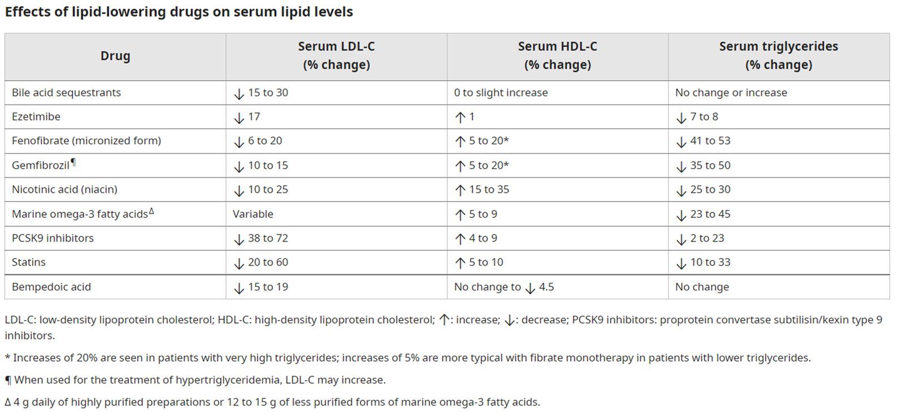
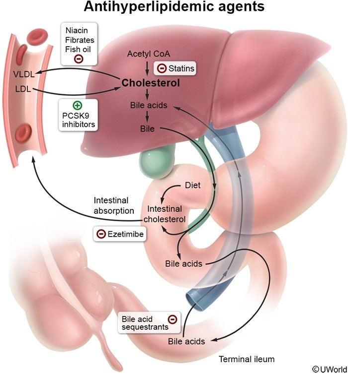
HMG-CoA reductase inhibitors (statins) — atorvastatin, lovastatin, pravastatin, simvastatin, rosuvastatin, pitavastatin
- Indication
- Elevated LDL-C and total cholesterol; the most effective class for lowering LDL-C. Very commonly used.
- Mechanism
- Inhibit HMG-CoA reductase, the rate-limiting step of hepatic cholesterol synthesis → hepatic cholesterol falls → the liver upregulates LDL receptors → more LDL-C is pulled from the circulation.
- Potency
- Most potent: atorvastatin, rosuvastatin, simvastatin. Least potent: fluvastatin — clinically questionable.
- Side effects
- Raised LFTs — periodic measurement is indicated; myopathy — muscle pain is common, rhabdomyolysis rare, dose-related, and enhanced by drugs that inhibit statin metabolism (some fibrates, cholestyramine, certain antibiotics, ketoconazole).
- Interactions know cold
- Grapefruit inhibits gut CYP3A (not liver); atorvastatin, lovastatin, and simvastatin are CYP3A substrates, so grapefruit raises their levels — pravastatin and rosuvastatin are not. Avoid grapefruit particularly with atorvastatin.
- Note
- Coenzyme Q10 as adjunct may reduce or prevent the muscle pain. Standard teaching adds: statins are contraindicated in pregnancy — the growing fetus needs cholesterol.
| Statin | CYP3A substrate? | Potency tier |
|---|---|---|
| atorvastatin | Yes — grapefruit warning strongest here | Most potent |
| simvastatin | Yes | Most potent |
| lovastatin | Yes | moderate |
| rosuvastatin | No | Most potent |
| pravastatin | No | moderate |
| fluvastatin | No (CYP2C9, standard teaching) | Least potent — clinically questionable |
- Indication
- Elevated LDL-C and total cholesterol — second line to statins.
- Mechanism
- Bind intestinal bile acids and interrupt entero-hepatic recycling → the liver spends cholesterol making new bile acids → LDL receptors rise.
- Side effects
- GI — flatulence, constipation; standard teaching adds a small rise in triglycerides.
- Caution know cold
- May interfere with absorption of digoxin, warfarin, phenobarbital, thyroxine, and lipid-soluble vitamins — separate other drugs by hours.
- Indication
- Elevated LDL-C and total cholesterol.
- Mechanism
- Inhibits intestinal absorption of cholesterol (at the brush-border NPC1L1 transporter — standard detail).
- Side effects
- Mild GI symptoms; avoid in liver disease.
- Note
- Synergistic LDL-C lowering with statins; NOT as effective as a statin as monotherapy, and the list notes no evidence that its LDL lowering alone prevents cardiovascular disease.
- Indication
- Elevated triglycerides (VLDL); low HDL.
- Mechanism
- Activate lipoprotein lipase; promote tissue triglyceride uptake; decrease hepatic VLDL production and release (via the nuclear receptor PPAR-α — standard detail).
- Side effects
- Myopathy; standard teaching adds gallstones.
- Interaction know cold
- Gemfibrozil — not fenofibrate — interacts adversely with statins (it blocks statin glucuronidation and raises statin levels → rhabdomyolysis). If a fibrate must join a statin, it is fenofibrate.
- Indication
- Isolated low HDL; low HDL with mildly elevated LDL or TG.
- Mechanism
- Lowers TG and LDL, raises HDL. Activates a G protein-coupled receptor on adipocytes → hormone-sensitive lipase ↓ → less free fatty acid flux to the liver → less hepatic TG and VLDL synthesis; because LDL is made from VLDL, LDL falls too. Also increases the half-life of apoA-I → HDL rises and reverse cholesterol transport improves.
- Side effects
- Flushing — pre-treat with aspirin or titrate up slowly; itching. Standard teaching adds hyperglycemia and hyperuricemia.
- Note
- Often found in exercise supplements ("pre-workout") — the source of a mysterious flush in a young lifter.
- Indication
- Elevated triglycerides; recommended by the AHA to reduce coronary heart disease risk.
- Mechanism
- Inhibit hepatic triglyceride synthesis and enhance clearance; may have anti-platelet, anti-thrombotic, and anti-arrhythmic effects.
- Sources
- Diet (salmon, tuna, halibut, mackerel, sardines, lake trout) and supplements. The prescription capsule is highly concentrated polyunsaturated fatty acids, FDA-approved as adjunct to diet for very high (≥500 mg/dL) triglycerides; expensive.
| Class | LDL-C | HDL-C | Triglycerides | Owns which problem |
|---|---|---|---|---|
| statins | ↓↓↓ | ↑ slight | ↓ | High LDL — first line, always |
| ezetimibe | ↓ (~20%) | — | — | Add-on to a statin |
| bile acid resins | ↓ | ↑ slight | ↑ slight | Second line; avoid if TG already high |
| PCSK9 inhibitors / inclisiran | ↓↓↓ (≈50–60%) | ↑ slight | ↓ slight | LDL still high on a maximal statin; statin intolerance |
| bempedoic acid | ↓ (≈18%) | — | — | Statin-intolerant patients |
| fibrates | variable | ↑ | ↓↓↓ | High TG |
| niacin | ↓ | ↑↑ | ↓ | Low HDL |
| omega-3 fatty acids | — / ↑ | — | ↓↓ | Very high TG (≥500 mg/dL) |
| apoC-III silencers (olezarsen, plozasiran) | — | — | ↓↓↓ (~80%) | Familial chylomicronemia syndrome |
The PCSK9 family — keep the LDL receptor alive
PCSK9 is the protein that drags the LDL receptor to the lysosome. Stop PCSK9 and each receptor is recycled to the surface many more times, pulling LDL out of the blood. Four ways to do it are now approved.
| Drug (trade) | Technology | Dosing | What to remember |
|---|---|---|---|
| evolocumab (Repatha) · alirocumab (Praluent) | Monoclonal antibodies that bind free PCSK9 | SQ every 2–4 weeks | Well tolerated — mild injection-site reactions, rare hypersensitivity; safety evaluated up to five years. FDA 2025: approved for primary prevention of MACE in adults at increased risk (previously secondary prevention only). |
| lerodalcibep (Lerochol) 2026 | PCSK9 inhibitor (small binding protein) | SQ once monthly | FDA-approved 2026 — the monthly-injection option. |
| enlicitide (Lipfendra) 2026 | Oral PCSK9 inhibitor | Pill | Lowers LDL-C 25–55%, dose-dependent. Adverse effects: diarrhea and dizziness. The first PCSK9 drug you can swallow. |
| inclisiran (Leqvio) | siRNA — RNA interference directs catalytic breakdown of PCSK9 mRNA in hepatocytes | SQ every 6 months after a loading phase | Mild injection-site reactions. FDA 2025: indicated as monotherapy (with or without a statin) to lower LDL-C. Twice-a-year dosing is the whole appeal. |
- Mechanism
- Inhibits ATP-citrate lyase (ACLY), the enzyme upstream of HMG-CoA reductase → hepatic cholesterol synthesis falls → LDL receptors rise. It is a prodrug activated by very long-chain acyl-CoA synthetase 1 (ACSVL1), which exists in the liver but not in skeletal muscle — so it works only in the liver and does not cause statin-type myopathy.
- Adverse effects
- Hyperuricemia and gout, a rise in creatinine, and tendon rupture within weeks to months of starting.
- Clinical considerations
- For statin-intolerant patients. Monitor serum uric acid and stabilize gout before starting. Available co-formulated with ezetimibe.
apoC-III silencers — olezarsen and plozasiran
ApoC-III, made mostly in the liver, raises triglycerides by inhibiting lipoprotein lipase and slowing hepatic clearance of TG-rich lipoproteins. Both new drugs destroy its messenger RNA in hepatocytes; the difference is the chemistry.
- Mechanism
- apoC-III-directed antisense oligonucleotide → binds apoC-III mRNA → degradation → less apoC-III protein → plasma TG and VLDL fall.
- Indication
- Reduce TG in adults with FCS and severe hypertriglyceridemia (risk of acute pancreatitis). Reduces TG ~80% and acute pancreatitis risk by 78%.
- Adverse effects
- Injection-site reactions, abdominal pain, decreased platelet counts, arthralgia. Cost ≈ $595,000/year.
- Mechanism
- apoC-III-directed siRNA — chemically modified, binds apoC-III mRNA in hepatocytes → degradation → less apoC-III → faster TG clearance.
- Indication
- Familial chylomicronemia syndrome.
- Adverse effects
- Hyperglycemia, headache, nausea, injection-site reactions.
🎮 Lipid Lab
0 / 0Read the panel and the patient, then pick the drug — or the drug you must avoid. The reveal tells you which gear in the fuel line you just turned.
Antihypertensive Drugs
Blood pressure = cardiac output × systemic vascular resistance, and every drug here lowers one term. The RAAS drugs (ACE inhibitors, ARBs) and dihydropyridines cut resistance; β-blockers cut output; diuretics cut volume first and resistance later. Three questions decide most exam items: which class is first line for this patient, which side effect is the class signature, and which combination is dangerous.
Abbreviations in this section — ACEI angiotensin-converting enzyme inhibitor; ARB angiotensin II receptor blocker; AT1 angiotensin II type 1 receptor; PVR / SVR peripheral / systemic vascular resistance; CO cardiac output; HCTZ hydrochlorothiazide; DCT distal convoluted tubule; ENaC epithelial sodium channel; MRA mineralocorticoid receptor antagonist; BPH benign prostatic hyperplasia; LV left ventricle; ERA endothelin receptor antagonist; ET endothelin; REMS risk evaluation and mitigation strategy (an FDA safety program); ALT / AST alanine / aspartate aminotransferase (liver enzymes); ACOG American College of Obstetricians and Gynecologists.


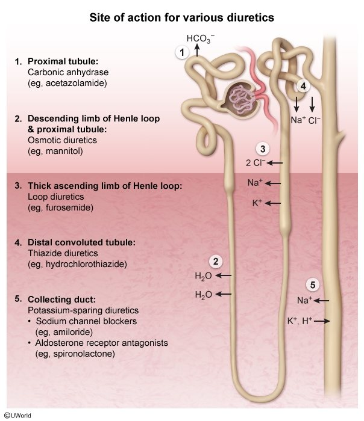
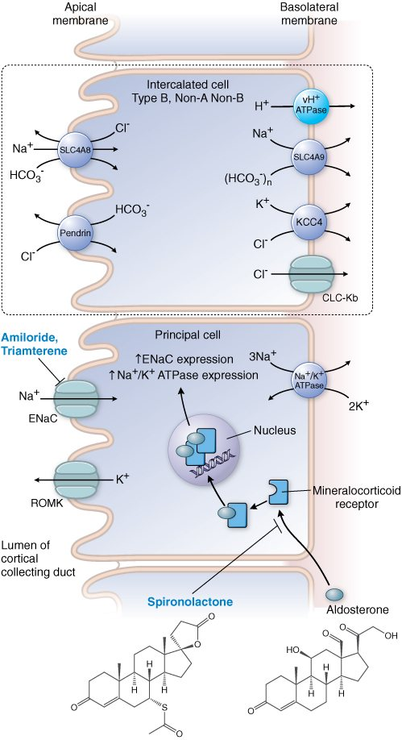
ACE inhibitors — captopril, enalapril, lisinopril
- Indications
- Hypertension, heart failure, LV dysfunction, renal protection in diabetics.
- Mechanism
- Inhibit ACE → less angiotensin II (↓ PVR / afterload) and less aldosterone; also inhibit breakdown of bradykinin.
- Side effects
- Dry non-productive cough; angioedema (rare) — both bradykinin. Standard teaching adds hyperkalemia (less aldosterone), a rise in creatinine (efferent arteriole dilates), first-dose hypotension, and fetal toxicity — contraindicated in pregnancy.
- Note know cold
- First-line (drug of choice) antihypertensive in diabetics, type 1 and 2. Renal protection in diabetics with microproteinuria even if normotensive.
Angiotensin II receptor blockers — losartan, candesartan, valsartan
- Indication
- Alternative to an ACE inhibitor when the ACE inhibitor is not tolerated (usually the cough).
- Mechanism
- Block the angiotensin II AT1 receptor.
- Side effects
- Well tolerated and no cough — bradykinin is not raised. Hyperkalemia and fetal toxicity are shared with ACE inhibitors (standard teaching).
- Note
- Second-generation ARBs (valsartan, candesartan) lower BP more potently than losartan.
- Mechanism for hypertension
- ↓ cardiac output via negative inotropic and chronotropic effects (and less renin from the β1-driven juxtaglomerular cells).
- Mixed blockers
- Labetalol and carvedilol block β1, β2, and α1 → an additional fall in PVR; the α-blocking effect is mild. Carvedilol may be the β-blocker of choice in heart failure.
- Nebivolol
- Vasodilates by stimulating nitric oxide (not by α1 block); β1-selective below 10 mg, loses selectivity above; antioxidant effects.
- Everything else
- See the antianginal section — selectivity, lipophilicity, masked hypoglycemia, the verapamil/diltiazem collision, and the acute-versus-chronic heart failure paradox all apply.
- Mechanism for hypertension
- Dihydropyridines ↓ PVR; diltiazem and verapamil ↓ PVR and cardiac output (verapamil only modestly on PVR).
- Note
- All CCBs vasodilate coronary arteries. Amlodipine is the outpatient workhorse: once daily, no reflex tachycardia, safe with a β-blocker. Its price is ankle edema.
Diuretics
| Family (drugs) | Site & mechanism | Indication | Side effects | Notes |
|---|---|---|---|---|
| Thiazides — hydrochlorothiazide (HCTZ) · thiazide-like — chlorthalidone, metolazone | Inhibit Na⁺ and water reabsorption in the early distal tubule (NCC). Short term: diuresis lowers BP. Long term: ↓ PVR. | Often viewed as first-line for hypertension in the non-diabetic patient; cost-effective. | Primarily metabolic: ↓ K⁺, ↓ Mg²⁺, ↑ uric acid, ↑ calcium; mild ↑ glucose and triglycerides. Contain a sulfonamide moiety. Hyponatremia is uncommon. | Chlorthalidone is 1.5–2× more effective than HCTZ; chlorthalidone 12.5 mg (HemiClor) for HTN. Monitor renal function and electrolytes. |
| Loop diuretics — furosemide (Lasix), bumetanide · ethacrynic acid | Inhibit Na⁺ and Cl⁻ reabsorption in the thick ascending loop of Henle (NKCC2) → the greatest diuresis of any diuretic; high ceiling, no plateau. | Primarily heart failure; less useful than thiazides for long-term hypertension. | Hypokalemic metabolic alkalosis, ↓ Mg²⁺, ↑ uric acid; excessive doses → hypovolemia and ↓ renal perfusion; ↓ Ca²⁺ (used in hypercalcemia). Standard teaching adds ototoxicity. | Ethacrynic acid if sulfonamide-allergic. New forms: bumetanide nasal spray (Enbumyst) and furosemide SQ via a wearable pump for short-term edema. Monitor renal function, electrolytes, dehydration. |
| Potassium-sparing — spironolactone (Aldactone), eplerenone · amiloride, triamterene | Collecting duct. Spironolactone and eplerenone block the aldosterone (mineralocorticoid) receptor; amiloride and triamterene block the aldosterone-dependent Na⁺ channel (ENaC). All decrease K⁺ excretion. | Primarily to raise potassium in patients on a thiazide or loop, so they do not need extra KCl; spironolactone/eplerenone in heart failure. | Hyperkalemia; spironolactone is anti-androgenic → gynecomastia, sexual dysfunction (not eplerenone). | Weak diuretics, limited BP effect. AVOID with K⁺ supplements; careful with ACE inhibitors and ARBs, which also retain K⁺. |
| Diuretic | K⁺ | Ca²⁺ | Mg²⁺ | Uric acid | Acid–base | Extras |
|---|---|---|---|---|---|---|
| thiazide / thiazide-like | ↓ | ↑ (reabsorbed) | ↓ | ↑ (gout) | alkalosis (mild) | ↑ glucose, ↑ triglycerides; sulfonamide; hyponatremia uncommon |
| loop | ↓ | ↓ (wasted) | ↓ | ↑ | hypokalemic metabolic alkalosis | hypovolemia, ↓ renal perfusion; ototoxicity (standard) |
| potassium-sparing | ↑ | — | — | — | acidosis (mild, standard) | spironolactone: gynecomastia; danger with K⁺, ACEI, ARB |
- Indication
- 3rd/4th-line agent for hypertension. Doxazosin carries a caution for heart failure; prazosin is rarely used because of tachyphylaxis (first-dose or high-dose collapse).
- Mechanism
- Block α1 receptors → vasodilation → ↓ PVR.
- Side effects
- Fluid retention, reflex tachycardia, postural hypotension — the pushback trio of every pure vasodilator.
- Niche
- They relax prostatic urethral smooth muscle → useful adjunct (2nd/3rd line) in men with hypertension and BPH.
- Direct vasodilators
- Hydralazine, minoxidil, nitroprusside (nitroprusside: surgery and hypertensive emergencies). Standard signatures: hydralazine → drug-induced lupus and reflex tachycardia; minoxidil → hirsutism, pericardial effusion; nitroprusside → cyanide/thiocyanate toxicity with prolonged infusion.
- Centrally acting anti-adrenergics
- Clonidine, methyldopa — α2 agonists that turn down sympathetic outflow. Methyldopa is safe in pregnancy. Standard signatures: clonidine → rebound hypertension on abrupt withdrawal; methyldopa → positive Coombs test / hemolytic anemia.
- Ganglionic blocker
- Trimethaphan — hypertensive emergencies only; blocks the nicotinic receptor at every autonomic ganglion, so both divisions go silent.
Aprocitentan, baxdrostat, and the triple pills
- Mechanism
- Prevents endothelin-1 from binding both ET-A and ET-B receptors — a constrictor pathway the RAAS drugs never touch.
- Indication
- Resistant hypertension; difficult-to-control BP (about a 4 mmHg difference in trials).
- Adverse effects
- Edema, anemia; CONTRAINDICATED in pregnancy — contraception during therapy and for 1 month after. Monitor for hepatotoxicity: ALT/AST and bilirubin at baseline and as indicated. Pharmacokinetics: half-life ~41 hours, steady state in ~8 days.
- Mechanism
- Oral inhibitor of aldosterone synthase, which catalyzes the final three steps of aldosterone production → less Na⁺ and water retention → BP falls. Upstream of the receptor the MRAs block.
- Indication
- Add-on treatment of hypertension not adequately controlled on other drugs.
- Adverse effects
- Hyperkalemia (10.2%), hyponatremia, hypotension — exactly what "no aldosterone" predicts.
- Widaplik (Azurity) 2026
- telmisartan (ARB) + amlodipine (DHP-CCB) + indapamide (thiazide-like).
- Tribenzor
- olmesartan (ARB) + amlodipine (DHP-CCB) + HCTZ (thiazide).
- Exforge HCT
- valsartan (ARB) + amlodipine (DHP-CCB) + HCTZ (thiazide).
- The pattern
- Every one is ARB + dihydropyridine + thiazide-type diuretic — resistance, resistance, volume — three complementary dials with none of the dangerous overlaps.
🎮 Side-Effect Sniper
0 / 0A patient walks in with one complaint. Name the antihypertensive that did it. This is how these drugs are actually tested — by their fingerprints.
🎮 Combination Court
0 / 0Cardiovascular drugs are prescribed in stacks, and the stack is where the danger hides. Two drugs — or a drug and a situation — enter; you rule. Allowed, needs an adjustment, or absolutely not.
Heart Failure Drugs
A failing ventricle triggers a neurohormonal storm — sympathetic drive, renin–angiotensin–aldosterone, vasopressin — that keeps the pressure up today and remodels the heart into a worse pump tomorrow. The drugs that lower mortality are the ones that quiet the storm: ACE inhibitors/ARBs/ARNI, β-blockers, mineralocorticoid antagonists, SGLT2 inhibitors. The drugs that relieve symptoms — loops, digoxin, inotropes — make today better without changing the ending. Keep those two lists separate and half the section is done.
Abbreviations in this section — HF heart failure; HFrEF heart failure with reduced ejection fraction; LVEF left ventricular ejection fraction; CHF chronic (congestive) heart failure; NYHA New York Heart Association symptom class I–IV; ARNI angiotensin receptor–neprilysin inhibitor; SGLT2 sodium-glucose cotransporter 2; DM-II type 2 diabetes mellitus; MRA mineralocorticoid receptor antagonist; cAMP / cGMP cyclic AMP / GMP; PDE3 phosphodiesterase type 3; sGC soluble guanylyl cyclase; NO nitric oxide; RV right ventricle; ICU intensive care unit; PVC premature ventricular contraction; VT ventricular tachycardia; ISDN isosorbide dinitrate.
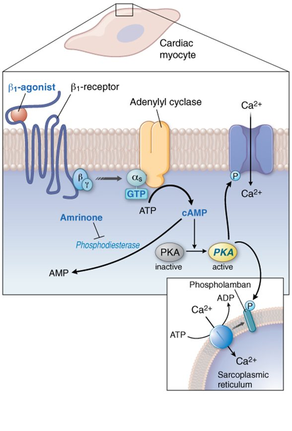
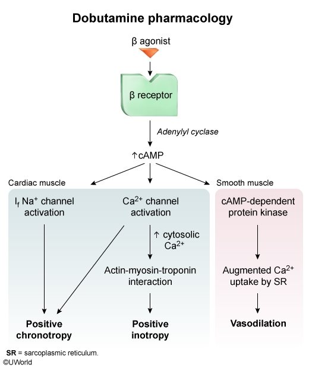
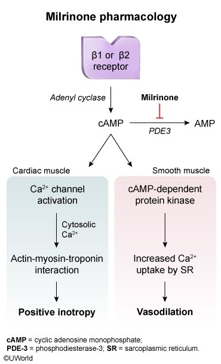
| Drug / class | Effect on survival | Why it is there |
|---|---|---|
| ACE inhibitors | ↓ mortality | Cornerstone. ↓ remodeling in HF and post-MI. Less effective in Black populations → hydralazine + isosorbide dinitrate preferred there. |
| ARBs | ↓ mortality | Alternative when the ACE inhibitor is not tolerated. |
| sacubitril/valsartan (ARNI) | ↓ CV death and HF hospitalization | HFrEF; benefit clearest when LVEF is below normal. |
| β-blockers (carvedilol, metoprolol) | ↓ mortality | Protect the heart from chronic catecholamines, ↓ remodeling, protect against lethal arrhythmias — once out of acute failure and euvolemic. |
| spironolactone / eplerenone | ↓ mortality | ↓ remodeling; most benefit in advanced (class III–IV) HF. |
| SGLT2 inhibitors (dapagliflozin, empagliflozin) | ↓ mortality and hospitalization | HFrEF with or without diabetes. |
| hydralazine + isosorbide dinitrate | ↑ survival in Black patients (African-American Heart Failure Trial) | Not shown in Caucasian populations. |
| vericiguat | ↓ CV death + HF hospitalization (composite) | After a worsening-HF event, LVEF < 45%. |
| finerenone | ↓ CV death + HF events (composite) | HF with LVEF ≥ 40% — the mildly-reduced / preserved group. |
| loop diuretics | Symptoms only | Diuretic of choice for acute and chronic HF congestion — they make the patient breathe, not live longer. |
| digoxin | Symptoms and hospitalizations only (standard teaching) | Symptomatic HF with dilated LV / systolic dysfunction; rate control in AF. |
| dobutamine · dopamine · milrinone | Short-term rescue only (days; standard teaching: may ↑ mortality with prolonged use) | Refractory / decompensated HF in the ICU, continuous IV infusion. |
- Indication
- Cornerstone of heart failure treatment.
- Mechanism
- As in hypertension; also decrease ventricular remodeling in HF and post-MI; decrease mortality.
- Note know cold
- Decreased efficacy in Black populations — hydralazine plus isosorbide dinitrate may be preferable there.
- ARBs
- Losartan, valsartan — alternative when the ACE inhibitor cannot be tolerated.
- Indication
- HFrEF — reduce CV death and hospitalization in chronic HF; benefit clearest with LVEF below normal.
- Mechanism
- Valsartan blocks AT1. Sacubitril inhibits neprilysin, the enzyme that degrades natriuretic peptides → more natriuretic peptide → ↑ natriuresis, ↑ urine cGMP, ↓ plasma pro-natriuretic peptides. Cardiovascular and renal effects come from sacubitril's active metabolite (LBQ657).
- Adverse effects
- Hypotension, hyperkalemia, orthostatic hypotension.
- Boxed warning know cold
- Fetal toxicity — discontinue as soon as pregnancy is detected. Standard teaching: never with an ACE inhibitor (angioedema — neprilysin also degrades bradykinin); leave a 36-hour gap.
- Indication
- Chronic HF — begin once the patient is out of acute heart failure and euvolemic.
- Mechanism
- Protect the heart from chronically elevated catecholamines; ↓ remodeling; ↓ mortality; protect against life-threatening arrhythmias.
- Which one
- Carvedilol may be the β-blocker of choice because of its α-blocking effects. Metoprolol is widely used post-MI and in HF.
- Indication
- Heart failure, especially class III and IV; eplerenone may work in class II.
- Mechanism
- Competitively block aldosterone at the mineralocorticoid receptor → potassium-sparing diuresis and blockade of aldosterone's actions (synthesis of Na⁺/K⁺/H⁺ pumps in the distal tubule and collecting duct). Eplerenone is more renal-specific. Also ↓ remodeling, ↓ mortality.
- Side effects
- Spironolactone: anti-androgenic → gynecomastia, sexual dysfunction — not seen with eplerenone. Hyperkalemia likely with potassium supplements.
- Finerenone
- Nonsteroidal MRA approved to reduce CV death, HF hospitalization, and urgent HF visits in adults with HF and LVEF ≥ 40%; prevents receptor overactivation and decreases fibrosis. Adverse effects: hyperkalemia, hypotension.
- Indication
- Reduced hospitalization and mortality in HFrEF with or without type 2 diabetes; preserved-EF benefit under study; also glycemic control in DM-II.
- Mechanism
- Selective SGLT2 inhibition in the proximal tubule → glucose and sodium stay in the urine → osmotic diuresis with greater electrolyte-free water clearance → better control of congestion without hurting atrial filling or perfusion.
- Adverse effects
- Renal impairment, infection (genital mycotic and urinary — standard detail), back pain, difficulty urinating.
- Indication
- Diuretic of choice for acute and chronic heart failure.
- Mechanism
- Inhibit Na⁺ and water reabsorption in the ascending loop of Henle; greatest diuresis; high ceiling — dose-dependent, no plateau (unlike thiazides).
- Side effects
- Metabolic, like thiazides — but ↓ serum Ca²⁺ (used in hypercalcemia).
- Note
- IV and PO forms; remain effective in renal failure.
Digoxin (Lanoxin) — cardiac glycoside
- Indications
- Symptomatic heart failure — especially dilated LV with systolic dysfunction; also rate control of chronic atrial fibrillation and some other supraventricular tachyarrhythmias.
- Mechanism
- Inhibits the Na⁺/K⁺-ATPase → intracellular Na⁺ accumulates → the Na⁺/Ca²⁺ exchanger runs the other way → intracellular Ca²⁺ rises → positive inotropy. Plus a negative dromotropic effect — slows AV node conduction (vagal tone ↑).
- Pharmacokinetics know cold
- Low therapeutic/toxic ratio; renally cleared — adjust the dose in renal failure.
- Side effects
- GI — anorexia, nausea; cardiac — arrhythmias with increased automaticity AND heart block; standard teaching adds visual changes (yellow-green halos) and confusion.
- Caution
- Arrhythmic toxicity is increased by hypokalemia (K⁺ and digoxin compete for the pump) — monitor serum electrolytes and creatinine. Verapamil and quinidine raise digoxin levels; bile acid resins block its absorption.
- ECG
- "Digitalis effect" — asymmetric ("scooped") ST depression with flattened or inverted T waves at therapeutic levels. Toxicity — PVCs, ventricular tachycardia, atrial tachycardia with block.
- Antidote
- Digoxin immune Fab — the one true antidote on this list.
- Indication
- HF refractory to other measures; short-term benefit (days); continuous IV infusion, typically in the ICU.
- Mechanism
- β1 agonism → ↑ heart rate and contractility. Dobutamine treats severe decompensated (acute) HF in the ICU. Dopamine's receptor effects depend on the infusion dose — at high doses its α agonism maintains BP but raises PVR; dopamine is both a non-selective α and β agonist.
- Side effects
- Tachycardia, arrhythmias.
- Indication
- HF refractory to other measures.
- Mechanism
- Inhibits PDE3 → cAMP ↑ → contractility ↑; also a peripheral vasodilator ("inodilator").
- Note
- Short-term benefit only; usually combined with a vasodilator. Because it bypasses the β receptor, it still works in a patient on a β-blocker — standard teaching.
- Nitrates
- Acute HF, combined with hydralazine or a loop diuretic. Generate NO → guanylate cyclase → less myosin light chain kinase activation. Caution in RV failure — may reduce preload too much.
- Hydralazine
- Acute HF combined with nitrates; direct vasodilator, perhaps via cGMP. Improves survival in Black (but not Caucasian) populations — African-American Heart Failure Trial, as isosorbide dinitrate/hydralazine.
- Mechanism
- Activates soluble guanylyl cyclase → intracellular cGMP ↑ → smooth muscle relaxation and vasodilation; also sensitizes sGC to endogenous NO. A nitrate's endpoint without the nitrate.
- Indication
- Reduce CV death and HF hospitalization after a hospitalization for HF or need for outpatient IV diuretics, in symptomatic chronic HF with EF < 45%.
- Adverse effects
- Hypotension, dyspepsia; CONTRAINDICATED in pregnancy — contraception during therapy and for 1 month after the last dose.
🎮 Mortality Meter
0 / 0A heart failure drug appears. Does it change how long the patient lives, only how they feel, or only whether they survive the week? Reflex speed — the reveal is its one-line reason.
Antiarrhythmic Drugs
Four classes, four channels, three ECG intervals. Class I blocks sodium (phase 0 → QRS), class II blocks β receptors (nodes → PR), class III blocks potassium (phase 3 → QT), class IV blocks calcium (AV node → PR). Learn which interval each class stretches and the toxicity follows: a wide QRS is pro-arrhythmic in a scarred ventricle, a long QT becomes torsades, a long PR becomes heart block. Then add the four "others": adenosine, digoxin, digoxin immune Fab, magnesium.
Abbreviations in this section — AF atrial fibrillation; PSVT paroxysmal supraventricular tachycardia; SVT supraventricular tachycardia; VT / VF ventricular tachycardia / fibrillation; WPW Wolff–Parkinson–White syndrome (an accessory pathway bypassing the AV node); RVR rapid ventricular response; APD action potential duration; QTc corrected QT interval; EP electrophysiologic; CAST Cardiac Arrhythmia Suppression Trial; non-DHP-CCB non-dihydropyridine calcium channel blocker; PFTs pulmonary function tests; TFTs thyroid function tests.
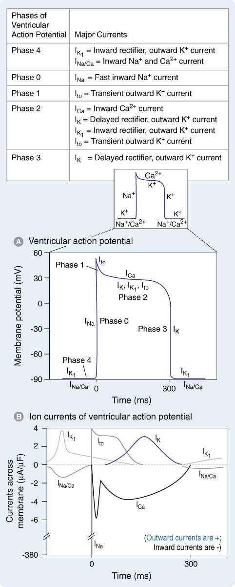
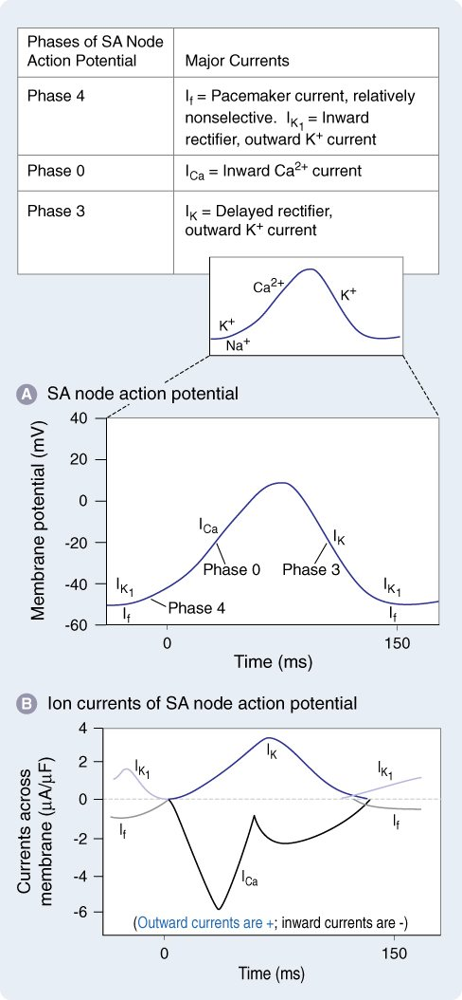
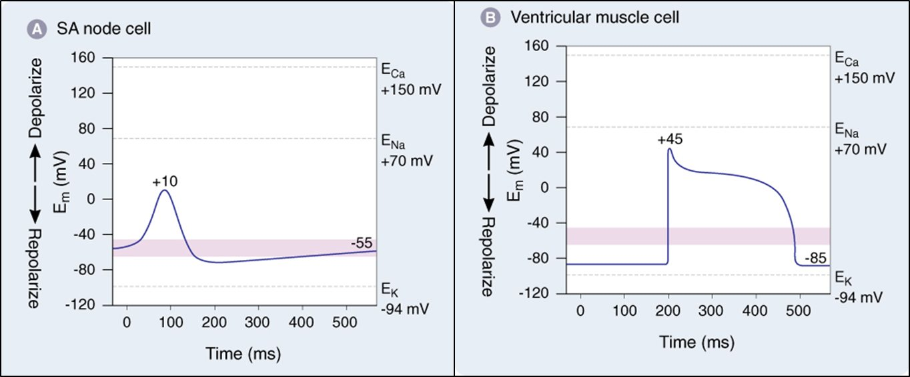
| Class | Drugs on the list | Blocks | ECG | Signature toxicity |
|---|---|---|---|---|
| IA | procainamide, quinidine, disopyramide | fast Na⁺ and K⁺ channels | ↑ QRS and ↑ QT | quinidine — GI (diarrhea), drug fever, ↑ digoxin; procainamide — lupus-like syndrome; disopyramide — urinary retention (anticholinergic) |
| IB | lidocaine (IV), tocainide (oral congener) | Na⁺ channels in depolarized, ischemic tissue; spares normal tissue | little change (shortens APD slightly — standard) | CNS, dose-related — nervousness, tremor, paresthesia |
| IC | flecainide, propafenone | fast Na⁺, strongest block; slows conduction everywhere, especially His–Purkinje | ↑ QRS, ↑ QT | pro-arrhythmic in a diseased left ventricle; dizziness, nausea, headache |
| II | propranolol (non-selective); metoprolol, esmolol, landiolol (β1) | β receptors → AV node conduction, sympathetic automaticity | ↑ PR, sinus bradycardia | bradycardia, heart block, bronchospasm, masked hypoglycemia |
| III | amiodarone, ibutilide, dofetilide, sotalol | K⁺ channels → ↑ APD and refractory period | ↑ QT | torsades — especially dofetilide, ibutilide, sotalol; amiodarone's organ toxicities |
| IV | verapamil, diltiazem | L-type Ca²⁺ → AV node conduction | ↑ PR, sinus bradycardia | heart block (worse with a β-blocker), heart failure, constipation, ↑ digoxin |
| Others | adenosine, digoxin, digoxin immune Fab, magnesium sulfate, etripamil | adenosine: A1 → K⁺ efflux → AV node hyperpolarized | adenosine: brief asystole / AV block after conversion | adenosine — transient flushing, chest pressure, dyspnea (standard); digoxin — see heart failure |
- Indication
- Maintain sinus rhythm in AF or flutter (rhythm control); some ventricular arrhythmias. Procainamide is also the safe drug for pre-excited AF (WPW) — standard teaching.
- Mechanism
- Block fast Na⁺ channels and K⁺ channels.
- Side effects
- Quinidine — GI (diarrhea), drug fever; procainamide — "lupus-like" syndrome; disopyramide — urinary retention, especially in men (anticholinergic).
- Interaction
- Quinidine raises digoxin levels — often requires a digoxin dose reduction.
- ECG
- ↑ QRS duration, ↑ QT interval.
- Indication
- Ventricular arrhythmias. Lidocaine is IV only, with a loading and a maintenance dose; tocainide is its oral congener.
- Mechanism
- Strong affinity for Na⁺ channels in depolarized, ischemic tissue; spares normal tissue — which is why it treats the ischemic ventricle and does nothing for the atrium.
- Side effects
- CNS, dose-related — nervousness, tremors, paresthesia; at higher levels confusion and seizures (standard).
- Indication
- Maintain sinus rhythm in AF/flutter in otherwise normal hearts; life-threatening ventricular arrhythmias guided by EP testing.
- Mechanism
- Block fast Na⁺ channels; slow conduction throughout the heart, especially the His–Purkinje system. Propafenone also has mild β-blocking effects.
- Caution know cold
- Pro-arrhythmic in patients with a diseased left ventricle — the CAST lesson: suppressing PVCs after an MI with a IC drug increased mortality (standard teaching). Dizziness, nausea, headache.
- ECG
- ↑ QRS duration; ↑ QT; the pro-arrhythmic effects can be dangerous.
- Indication
- Supraventricular arrhythmias (rate control of AF); ventricular arrhythmias.
- Mechanism
- Slow AV node conduction; inhibit sympathetic activation of cardiac automaticity.
- Notes
- Metoprolol widely used post-MI and in HF — anti-catecholamine and anti-remodeling effects lower mortality; not generally pro-arrhythmic, but dose-related bradycardia. Esmolol: emergencies and surgery only. Landiolol (Rapiblyk): IV β1 blocker for adults with SVT, more cardioselective than esmolol — clinical significance unclear.
- Indication
- Maintain sinus rhythm in AF/flutter; ibutilide (IV only) and dofetilide also convert AF to sinus rhythm; amiodarone and sotalol for life-threatening ventricular arrhythmias.
- Mechanism
- Prolong action potential duration and refractory period (K⁺ channel block). Amiodarone also blocks Na⁺ and Ca²⁺ channels and β receptors; sotalol also blocks β receptors.
- Side effects
- Pro-arrhythmic — especially dofetilide, ibutilide, sotalol (torsades).
- Amiodarone know cold
- Pulmonary fibrosis (close monitoring), hypo- or hyperthyroidism, photosensitivity, nausea, blue-gray skin discoloration. Standard teaching adds hepatotoxicity, corneal microdeposits, a half-life of weeks, and CYP/P-glycoprotein inhibition that raises warfarin and digoxin levels.
- ECG
- ↑ QT interval.
- Indication
- Supraventricular arrhythmias — rate control of AF.
- Mechanism
- Slow conduction through the AV node.
- The key note know cold
- IV diltiazem is the drug of choice for rate control of untreated AF with rapid ventricular response — provided the patient does not have ventricular pre-excitation. In WPW, diltiazem can accelerate conduction down the accessory pathway → VF and death. Monitor BP. Alternative: IV esmolol.
- Etripamil (Cardamyst)
- Non-DHP CCB nasal spray, structurally related to verapamil, self-administered for acute symptomatic episodes of PSVT. Adverse effects: nasal discomfort and congestion.
Adenosine · digoxin · digoxin immune Fab · magnesium sulfate
- Adenosine — indication
- Termination of PSVT. Commonly used in the emergency department and by EMTs.
- Adenosine — mechanism
- Slows AV node conduction and increases its refractory period by hyperpolarizing the cell (A1 receptor → K⁺ efflux, cAMP ↓).
- Adenosine — how it is given
- IV bolus — very short half-life (seconds), so it is pushed fast and flushed; usually well tolerated. Standard teaching: transient flushing, chest pressure, dyspnea; caffeine and theophylline antagonize it, dipyridamole potentiates it.
- Adenosine — ECG
- Very brief asystole or AV block may follow cardioversion to sinus rhythm — expected, not a complication.
- Digoxin
- Rate control in AF through vagal AV nodal slowing — see the heart failure section for the full profile.
- Digoxin immune Fab
- Antibody fragments that bind digoxin — the antidote for life-threatening digoxin toxicity.
- Magnesium sulfate
- IV rescue for torsades de pointes (and digoxin-induced arrhythmias) — even when the serum magnesium is normal.
🎮 Class Clash
0 / 0A drug appears — call its Vaughan Williams class before you can second-guess. The reveal is the one interval it stretches and the one thing it breaks.
🎮 Lab Orders
0 / 0Every drug in this block has a monitoring plan that catches its worst complication early. You are writing the orders — for the whole list, not just this section.
Hypertrophic Cardiomyopathy & Transthyretin Amyloid
Two diseases where the problem is the muscle itself, not its plumbing or wiring. In obstructive hypertrophic cardiomyopathy too many myosin heads grab actin, so the septum squeezes the outflow tract shut — the new drugs let some of those heads rest. In transthyretin amyloid cardiomyopathy a liver protein falls apart into fibrils that stiffen the wall — the new drugs either glue the tetramer together or stop the liver making it.
Abbreviations in this section — HCM / oHCM hypertrophic cardiomyopathy / obstructive HCM; LVOT left ventricular outflow tract; LVEF left ventricular ejection fraction; TTR transthyretin; ATTR-CM transthyretin amyloid cardiomyopathy; siRNA small interfering RNA; SCr / eGFR serum creatinine / estimated glomerular filtration rate; CYP cytochrome P450.
- Mechanism
- Allosteric, reversible inhibitor selective for cardiac myosin; modulates the number of myosin heads that cross-bridge to actin in systole and diastole. Excess cross-bridge formation and loss of the "super-relaxed" state are the mechanistic hallmarks of HCM.
- Adverse effects
- Decreased LVEF, dizziness; CONTRAINDICATED in pregnancy — contraception during therapy and for 4 months after the last dose.
- Interactions know cold
- CONTRAINDICATED with CYP2C19 and CYP3A4 inhibitors or inducers — pharmacokinetic drug–drug interactions swing its level and therefore the ejection fraction. Echo monitoring of LVEF under a REMS program is standard.
- Mechanism
- Oral cardiac myosin ATPase inhibitor — decreases myosin–actin cross-bridge formation → reduces contractility → lowers the LVOT gradient.
- Indication
- Improve functional capacity and symptoms in adults with symptomatic obstructive HCM.
- Adverse effects
- Hypertension; metabolized primarily by CYP2C9 (contrast mavacamten's 2C19/3A4).
- Mechanism
- Selectively bind and stabilize the transthyretin tetramer, slowing its dissociation and the formation of amyloid fibrils.
- Indication
- Oral, to reduce CV hospitalization and death in adults with wild-type or variant (hereditary) ATTR-CM.
- Adverse effects
- Acoramidis: diarrhea, upper abdominal pain; a rise in SCr and fall in eGFR in the first 4 weeks that then stabilizes. Cost ≈ $18,759 per 28 days.
- Note
- Tafamidis was the first oral TTR stabilizer (2019); the two have not been compared head-to-head.
- Mechanism
- siRNA that binds transthyretin mRNA → no TTR protein is made → gene expression effectively silenced.
- Indication
- SQ injection to reduce CV hospitalizations, urgent HF visits, and CV death in wild-type or variant ATTR-CM; also the polyneuropathy of hereditary TTR amyloidosis.
- Adverse effects
- Diarrhea, falls, peripheral edema, arthralgia, dyspnea, dizziness; reduced vitamin A — supplementation advised (TTR carries retinol). Cost ≈ $119,351 per 3 months.
Review of Antiplatelet Agents
The cardiovascular list reproduces one table. The full pharmacology — reversibility, prodrugs, contraindications, the arterial-versus-venous rule — lives in the Hematology Key Drug List. This is the version you are expected to recognize on a cardiology exam.
| Drug | Pharmacologic mechanism(s) |
|---|---|
| Aspirin | Irreversibly inhibits COX-1 in platelets → ↓ thromboxane A₂ → platelets cannot clump → fewer clots. |
| Cilostazol | Phosphodiesterase inhibitor that suppresses platelet aggregation + direct arterial vasodilator (claudication). |
| Clopidogrel | Potent, irreversible P2Y12 inhibitor / ADP antagonist → ↓ platelet activation and aggregation; extensively metabolized, partly by CYP2C19 (genetic polymorphisms matter). |
| Ticagrelor | ATP analogue, reversible P2Y12 inhibitor — no metabolic activation needed, faster and more potent; metabolized by CYP3A4/5. |
| Prasugrel | Irreversible (prodrug) P2Y12 inhibitor, metabolized by CYP2C19. |
| Cangrelor | ATP analogue, reversible IV P2Y12 inhibitor. |
| Rivaroxaban | Selectively inhibits factor Xa → less thrombin generation, and inhibits thrombin-induced platelet aggregation (the anticoagulant on the antiplatelet table). |
| Vorapaxar | PAR-1 antagonist — blocks thrombin-induced platelet aggregation → fewer thrombotic events. |
| Dipyridamole | Targets PDE3/5, induces synthesis and release of PGI₂, scavenges peroxy radicals; also a coronary vasodilator (pharmacologic stress tests) and a therapeutic agent in TIA and stroke. |
Red Box Round
Every fatal combination, every boxed warning, every "call it now" moment in the block, on twelve cards. Tap a card to flip it. If you can answer all twelve cold, you have the part of this list that examiners care most about.
🎮 Reversal Room
0 / 0The flips taught you what kills — now pick what saves. Each emergency has one best move.
🎮 Complication Showdown
0 / 0Six complications that all present as "something is wrong with the heart." Read the vignette and name the one that is actually happening.
🎮 Patient Matcher
The most testable skill in this whole list: pick the drug whose profile is a feature for this patient — or whose contraindication rules it out. Eighteen patients are waiting.
Who gets what?
0 / 0🎮 Hook Recall
0 / 0Every memory hook in this document, with a hole punched in it. If the hook is doing its job, the answer arrives before you finish reading.
The Arcade
No section headings to help you now. These three drills pull from the entire drug list at once — which is the only condition under which you actually know it.
🎮 Two Truths & a Lie
0 / 0Three statements about one drug. Two are gospel; one is a trap. Finding the lie forces you to verify all three — triple recall per round.
🎮 Ladder Builder
0 / 0Some facts only make sense as a sequence. Tap the rungs in order — first tap is rung one.
🎮 Speed Round
streak 0 · best 0Questions from across the entire drug list, ten seconds each. The clock resets your streak; your best survives between sessions. This is where knowing becomes reflex.
Glossary & References
Every abbreviation used anywhere in this document, spelled out in one place — plus the reference tables, the sources behind the list, and the reading the list recommends before rotations.
| Short form | Spelled out | What it means in one line |
|---|---|---|
| ACE / ACEI | angiotensin-converting enzyme / ACE inhibitor | The enzyme that makes angiotensin II and destroys bradykinin; captopril, enalapril, lisinopril block it. |
| ACLY | ATP-citrate lyase | Cholesterol-synthesis enzyme upstream of HMG-CoA reductase; bempedoic acid's target. |
| ACS | acute coronary syndrome | Unstable angina or a heart attack. |
| ACSVL1 | very long-chain acyl-CoA synthetase 1 | Liver-only enzyme that activates bempedoic acid — why it spares muscle. |
| AF | atrial fibrillation | Irregular atrial rhythm; rate control lives at the AV node. |
| ANP / BNP | atrial / B-type natriuretic peptide | The heart's own diuretic-vasodilator hormones; degraded by neprilysin. |
| APD | action potential duration | Lengthened by class III drugs → longer QT. |
| apo | apolipoprotein | Protein components of lipoproteins: apoA-I (HDL), apoB (VLDL/LDL), apoC-III (LPL brake). |
| ARB | angiotensin II receptor blocker | Losartan, candesartan, valsartan — block AT1. |
| ARNI | angiotensin receptor–neprilysin inhibitor | Sacubitril/valsartan (Entresto). |
| AT1 | angiotensin II type 1 receptor | Where angiotensin II constricts vessels and releases aldosterone. |
| ATTR-CM | transthyretin amyloid cardiomyopathy | Misfolded TTR fibrils stiffening the heart. |
| AV | atrioventricular | The node between atria and ventricles — the PR interval. |
| BPH | benign prostatic hyperplasia | Enlarged prostate; α1-blockers relax its smooth muscle. |
| cAMP / cGMP | cyclic adenosine / guanosine monophosphate | Second messengers: cAMP drives the heart, cGMP relaxes vessels. |
| CAST | Cardiac Arrhythmia Suppression Trial | Showed class IC drugs increase mortality after MI. |
| CCB / DHP | calcium channel blocker / dihydropyridine | Amlodipine and nifedipine are DHPs; verapamil and diltiazem are non-DHPs. |
| CHF / HF / HFrEF | (chronic) heart failure / HF with reduced ejection fraction | — |
| CO | cardiac output | Heart rate × stroke volume. |
| COX | cyclooxygenase | Aspirin's target in the platelet. |
| CYP | cytochrome P450 | The liver's drug-metabolizing enzymes (3A4, 2C19, 2C9, 2D6…). |
| DCT | distal convoluted tubule | Thiazide site (NCC). |
| ECG | electrocardiogram | PR, QRS, and QT are the three intervals this list cares about. |
| eGFR / SCr | estimated glomerular filtration rate / serum creatinine | Kidney function measures. |
| ENaC | epithelial sodium channel | Collecting duct channel blocked by amiloride and triamterene. |
| EP | electrophysiologic | Invasive rhythm testing that guides antiarrhythmic choice. |
| ERA / ET | endothelin receptor antagonist / endothelin | Aprocitentan blocks ET-A and ET-B. |
| FCS | familial chylomicronemia syndrome | Genetic LPL failure with extreme triglycerides and pancreatitis. |
| FFA | free fatty acids | Fuel released from fat; raw material for hepatic VLDL. |
| HCM / oHCM | hypertrophic cardiomyopathy / obstructive HCM | Thick septum that can block the outflow tract. |
| HCTZ | hydrochlorothiazide | The prototype thiazide. |
| HDL-C / LDL-C | high- / low-density lipoprotein cholesterol | — |
| HMG-CoA | 3-hydroxy-3-methylglutaryl coenzyme A | Statins inhibit its reductase, the rate-limiting cholesterol step. |
| HSL | hormone-sensitive lipase | Adipocyte enzyme turned off by niacin. |
| ISDN / ISMN | isosorbide dinitrate / mononitrate | Long-acting oral nitrates. |
| JG | juxtaglomerular | The kidney cells that release renin (β1-driven). |
| LFTs | liver function tests | ALT, AST, bilirubin. |
| LPL | lipoprotein lipase | Capillary enzyme that clears triglyceride; activated by fibrates, braked by apoC-III. |
| LV / LVEF / LVOT | left ventricle / LV ejection fraction / LV outflow tract | — |
| mAb | monoclonal antibody | Evolocumab and alirocumab. |
| MACE | major adverse cardiovascular events | MI, stroke, CV death — the trial endpoint. |
| MI | myocardial infarction | Heart attack. |
| MR / MRA | mineralocorticoid receptor / MR antagonist | Spironolactone, eplerenone, finerenone. |
| NCC / NKCC2 | Na⁺-Cl⁻ cotransporter / Na⁺-K⁺-2Cl⁻ cotransporter | Thiazide target / loop diuretic target. |
| NO | nitric oxide | Endothelial relaxing signal; released by nitrates and nitroprusside. |
| NPC1L1 | Niemann–Pick C1-like 1 | Gut cholesterol transporter blocked by ezetimibe. |
| NTG | nitroglycerin | — |
| NYHA | New York Heart Association | Heart failure symptom classes I–IV. |
| PAR-1 | protease-activated receptor 1 | Platelet thrombin receptor; vorapaxar's target. |
| PCSK9 | proprotein convertase subtilisin/kexin type 9 | Protein that destroys LDL receptors. |
| PDE (3, 5) | phosphodiesterase | PDE3 destroys cAMP (milrinone blocks it); PDE5 destroys cGMP (sildenafil blocks it). |
| PPAR-α | peroxisome proliferator-activated receptor alpha | Fibrates' nuclear receptor. |
| PSVT / SVT | (paroxysmal) supraventricular tachycardia | Adenosine's and etripamil's indication. |
| PVC | premature ventricular contraction | An early ventricular beat; a digoxin toxicity sign. |
| PVR / SVR | peripheral / systemic vascular resistance | The "R" in BP = CO × R. |
| QTc | corrected QT interval | QT adjusted for heart rate. |
| RAAS | renin–angiotensin–aldosterone system | The chain from kidney to adrenal that raises pressure and volume. |
| REMS | risk evaluation and mitigation strategy | An FDA-mandated safety program (mavacamten). |
| RVR | rapid ventricular response | Fast AF. |
| sGC | soluble guanylyl cyclase | Makes cGMP when NO arrives; vericiguat stimulates it. |
| SGLT2 | sodium-glucose cotransporter 2 | Proximal tubule transporter; dapagliflozin and empagliflozin block it. |
| siRNA / ASO | small interfering RNA / antisense oligonucleotide | Two ways to destroy a specific mRNA (inclisiran, plozasiran, vutrisiran / olezarsen). |
| SL / SQ / IV / PO | sublingual / subcutaneous / intravenous / by mouth | Routes. |
| TG | triglycerides | — |
| TTR | transthyretin | Liver protein carrying thyroxine and retinol; misfolds into amyloid. |
| VLDL | very-low-density lipoprotein | The liver's triglyceride carrier; parent of LDL. |
| VT / VF | ventricular tachycardia / fibrillation | — |
| WPW | Wolff–Parkinson–White | Accessory pathway syndrome — never block the AV node in pre-excited AF. |
| Drug / class | PR | QRS | QT | The feared rhythm |
|---|---|---|---|---|
| β-blockers (II) | ↑ | — | — | sinus bradycardia; heart block with conduction disease |
| verapamil / diltiazem (IV) | ↑ | — | — | sinus bradycardia; heart block, especially with a β-blocker |
| class IA | — | ↑ | ↑ | torsades |
| class IC | — | ↑↑ | ↑ | re-entrant VT in a scarred ventricle |
| class III | — | — | ↑↑ | torsades (dofetilide, ibutilide, sotalol) |
| ranolazine | — | — | ↑ (dose-related) | torsades, worse with diltiazem/verapamil |
| digoxin | ↑ | — | ↓ (scooped ST, flat T) | PVCs, VT, atrial tachycardia with block |
| adenosine | ↑↑ (transient) | — | — | brief asystole / AV block after conversion — expected |
| Finding | Drug |
|---|---|
| dry cough · angioedema | ACE inhibitors (bradykinin) |
| ankle edema, headache, flushing | dihydropyridine CCBs (amlodipine, nifedipine) |
| constipation + bradycardia + ↑ digoxin | verapamil |
| nightmares, fatigue, sexual dysfunction, masked hypoglycemia | lipophilic β-blockers (propranolol, metoprolol) |
| headache + hypotension; tolerance without a nightly break | nitrates |
| gynecomastia | spironolactone (not eplerenone) |
| ↓K⁺, ↑Ca²⁺, ↑uric acid, ↑glucose | thiazides |
| ↓K⁺, ↓Ca²⁺, hypokalemic metabolic alkalosis, hypovolemia | loop diuretics |
| first-dose syncope; fluid retention; reflex tachycardia | prazosin (α1-blockers) |
| lupus-like syndrome | procainamide (and hydralazine) |
| urinary retention in a man on a rhythm drug | disopyramide |
| pulmonary fibrosis, thyroid dysfunction, blue-gray skin, photosensitivity | amiodarone |
| tremor, paresthesia, nervousness on an IV rhythm drug | lidocaine |
| scooped ST depression; nausea; atrial tachycardia with block | digoxin |
| flushing relieved by pre-treatment with aspirin | niacin |
| muscle pain, ↑ LFTs; worse with grapefruit or gemfibrozil | statins |
| gout + tendon rupture on a lipid drug | bempedoic acid |
| QT prolongation on an add-on angina drug | ranolazine |
| ↓ LVEF on an HCM drug; CYP2C19/3A4 contraindications | mavacamten |
| low vitamin A on an amyloid drug | vutrisiran |
| edema + anemia + liver tests on a resistant-HTN drug | aprocitentan |
| hyperkalemia (10%) + hyponatremia on an add-on HTN drug | baxdrostat |
| genital infection + osmotic diuresis on an HF drug | SGLT2 inhibitors |
| fetal toxicity boxed warning on an HF drug | sacubitril/valsartan |
| Family | Monitor | Rescue / antidote |
|---|---|---|
| digoxin | serum K⁺, Mg²⁺, creatinine; digoxin level | digoxin immune Fab; correct K⁺ and Mg²⁺ |
| class III / IA / ranolazine | QTc; K⁺ and Mg²⁺ | IV magnesium sulfate for torsades; stop the drug |
| amiodarone | thyroid and liver tests; chest X-ray / PFTs; eye exam | stop the drug (half-life weeks) |
| ACE inhibitors / ARBs / ARNI | K⁺ and creatinine 1–2 weeks after starting; pregnancy status | angioedema: stop forever, secure the airway |
| MRAs · baxdrostat · K-sparing diuretics | K⁺, creatinine | hyperkalemia: calcium, insulin/glucose, stop offenders (standard) |
| thiazides / loops | electrolytes, renal function, volume status; uric acid, glucose | replace K⁺/Mg²⁺; add a K⁺-sparing agent |
| statins | LFTs periodically; CK if muscle symptoms | stop; fluids for rhabdomyolysis; CoQ10 for myalgia |
| bempedoic acid | uric acid (stabilize gout first) | stop if tendon pain |
| aprocitentan | ALT/AST, bilirubin at baseline and as indicated; hemoglobin | stop; contraception 1 month after |
| mavacamten | echo LVEF (REMS); CYP2C19/3A4 co-medications | hold for LVEF < 50% (standard); contraception 4 months after |
| β-blocker overdose (standard) | heart rate, glucose | glucagon (bypasses the β receptor), atropine |
| CCB overdose (standard) | heart rate, BP | IV calcium, high-dose insulin/glucose |
| nitroprusside (standard) | thiocyanate / acid–base with prolonged infusion | stop; hydroxocobalamin or sodium thiosulfate for cyanide |
Sources behind this list
Built from Key Drug List: Cardiovascular Pharmacology 2026, UNE COM — compiled and edited by Jeffrey Handler, MD; Richard Reese, MD (Professor Emeritus); Amy Davidoff, PhD; Ryan Smith, DO, PhD; Kyle R. Scully, PhD; and Paul E. Segal, DO (PES/KRS edits), including its "Additions for 2024, 2025, and 2026." Figures are lazy-loaded from the Week 13 study-notes asset set (Scully lectures, Golan, UWorld, AMBOSS). Standard, widely taught pharmacology is layered in only where it explains a mechanism or a classic exam pattern and is marked "standard teaching" in the text.
Recommended resources from the list (the authors suggest these before clinical rotations): ACC/AHA 2025 Guideline for High Blood Pressure in Adults (Circulation, Aug 2025) and the 2021 JAMA hypertension update · 2026 ACC/AHA Guideline on the Management of Dyslipidemia (JACC) · AACE Clinical Practice Guideline on Pharmacologic Management of Adults with Dyslipidemia (Feb 2025) · The Medical Letter: Drugs for Hypertension (#1703, 2024), Drugs for Hypercholesterolemia (#1756, 2026), Drugs for Hypertriglyceridemia (#1759, 2026), Drugs for Heart Failure (#1729, 2025), Treatment of Atrial Fibrillation (#1693, 2024).
The UWorld offline library shared alongside this document was used only as an article index (its 103 Cardiology titles); the "UWorld articles for this section" callouts point you to the relevant reading. Article text itself was not available to this build.
This study system reorganizes the official Key Drug List for learning. When in doubt, the original document and lecture material govern.